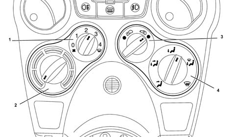

Introduction - HEATER
- Path
- Descriptions > 50 AUXILIARY UNITS > 5020 HEATER > Introduction - HEATER
- Kind
- system description
- Applies to
- all engines; all production periods
- Interactive page
- https://sloeber94.github.io/elrnDB-fPnd/en/#/2753481
Applies to: all engines; all production periods
This vehicle may be equipped with a simple passenger compartment air heating system.
This system consists of a heater unit and a control panel.
The following functions are available to the user:
- passenger compartment air heating
- manual recirculation
- alteration of passenger compartment incoming air flow
- adjustment of incoming air flows
This functions may only be set manually by the user (no automatic management is available) by operating the control panel shown below:

1 Fan speed selection knob 2 Air mixer control knob 3 Recirculation control knob 4 Passenger compartment air distribution selection knob
Applies to: all engines; all production periods
Air mixing, air distribution and recirculation commands are sent from the knobs to the heater casing by flexible cables (bowden cables).
The heater unit fitted to the facia mounting beam is identical to the climate control unit with the exception of components specific to the air cooling and dehumidification circuit.
The heater contains (in additon to the flaps and pollen filter) only a radiator-heater within which engine coolant circulates and associated piping.